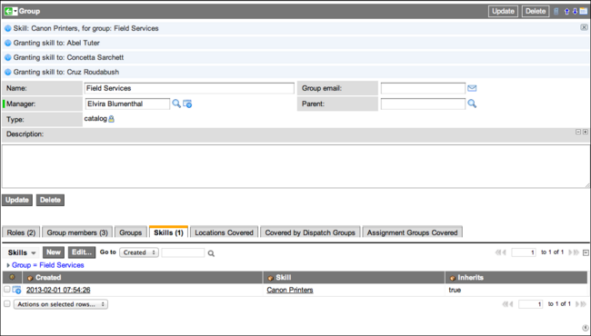

Skills Management
| |
Note: This article applies to Fuji and earlier releases. For more current information, see Skills Management at http://docs.servicenow.com
The ServiceNow Wiki is no longer being updated. Visit http://docs.servicenow.com for the latest product documentation. |
Contents
1 Overview
The Skills Management plugin enables an administrator to assign configured competencies, called skills, to groups or individual users. These skills can then be used to determine who can be assigned to particular tasks.
Skills can contain other skills. Any access granted to a parent skill will be granted to any skill that it contains. Once a skill is assigned to a group, all members of the group automatically inherit that skill and any others contained within it. The skills mechanism is similar to ServiceNow role management.
| |
Note: References to Work Management indicate that the information on this page is valid for ServiceNow versions prior to Fuji. In the Fuji release, Work Management was renamed Field Service Management. |
2 Enhancements
2.1 Calgary
The following enhancement is added in the Calgary release:
- Skills can now be related to models. This is especially useful in the Work Management application.
3 Activating the Plugin
The plugin is automatically activated when the following applications are activated:
Administrators can also activate the Skills plugin manually.
| Click the plus to expand instructions for activating a plugin. |
|---|
|
If you have the admin role, use the following steps to activate the plugin.
|
4 Creating Skills
- Navigate to Skills > Skills.
- Click New.
- Enter a unique, descriptive Name.
- Enter a Description of the skill.
- Click Submit.
- Reopen the Skill record.
- [Optional] Use the Contains Skills related list to add sub-skills.
- [Optional] Use the Models related list to add any models that should be associated with the skill (Calgary release).
- The Users related list contains users (based on their User record or the groups they belong to) wgi have the skill and sub-skills named in this record.
{kind=link}
5 Assigning Skills
Assign skills to individual users or to groups. Members of a group inherit all the skills configured for their group.
5.1 User Skills
If you assign a skill that contains other skills to a user, the user automatically inherits the contained skills. To do the following procedure, you must activate the Work Management plugin.
- Navigate to Skills > Users.
- Select a user from the list.
- In the User record, select the Skills related list.
- Click Edit and select one or more existing skills from the slushbucket.
- Click Save.
{kind=link}
5.2 Group Skills
If you assign a skill this skill contains other skills to a group, the group and all its members automatically inherit the contained skills.
- Navigate to Skills > Groups.
- Select a group from the list.
- In the Group record, select the Skills related list.
- Click Edit and select one or more existing skills from the slushbucket.
- Click Save.
- The skill is added to the group and all the group members who are granted this skill are listed at the top of the form.
- 
{kind=link}
6 Filtering Potential Assignees Based On Skills
In the base system, field service orders (versions prior to Calgary), work management tasks (Calgary release), and project tasks use skills to filter assignments. If a skill is identified in the Skill field, only groups or users with the appropriate skill can be assigned to the task.
The Skills Management plugin contains a script include that builds a qualifier based on the assignment group and required skills for the task. For example, the Assigned To field on the Project Task record uses the following reference qualifier (using a dictionary override):
javascript:var util = new SkillsUtils(); util.assignedToRefQual(current);
This results in the following:
- If an Assignment group is set, the list is filtered on members of that group.
- If Skills are set (the Skills field may need to be added to the form), the list is filtered on users with all the skills selected.
- If Assignment group and Skills are both set, the list if filtered on group members with the defined skills.
You can introduce the same behavior to other task tables by using the same reference qualifier.